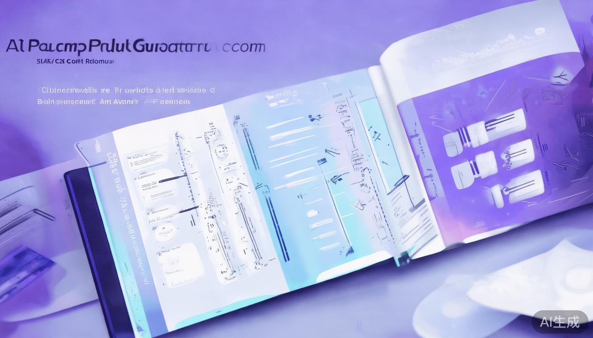

白驹 · 全局大脑 · AI 创作纪元
AI绘画从入门到精通
从「文字变图片」到「商业级作品」，这份指南覆盖AI绘画的全部关键知识。
一、主流工具对比
| 工具 | 优势 | 适合人群 | 价格 |
|---|---|---|---|
| Midjourney | 画质最高、艺术感强 | 专业设计师 | $10-60/月 |
| DALL-E 3 | 文字理解最精准 | 需要精确控制的场景 | ChatGPT Plus内含 |
| Stable Diffusion | 开源免费、可本地部署 | 技术爱好者 | 免费 |
| 即梦 | 中文优化好 | 国内用户 | 免费额度 |
| 可灵 | 视频生成联动 | 短视频创作者 | 免费额度 |
二、提示词公式

基础公式
[主体描述] + [环境/背景] + [风格] + [画质/参数]
示例
一位穿着汉服的少女，站在樱花树下，微风拂面，
中国古风插画风格，柔和光线，细腻笔触，
8k分辨率，超高清 --ar 2:3
进阶技巧
- 风格关键词：cyberpunk, oil painting, watercolor, pixel art, studio ghibli
- 艺术家风格：in the style of Van Gogh, by Hayao Miyazaki
- 光影控制：golden hour lighting, soft shadows, dramatic lighting
- 镜头语言：close-up, wide angle, bird's eye view, macro photography
三、实战场景
1. 公众号/小红书配图
需求：快速生成符合文章调性的配图
技巧：
- 使用统一的风格关键词，保持账号视觉一致性
- 生成多张选最佳，或局部重绘（inpainting）调整
- 用--ar参数控制比例：公众号封面用16:9，小红书用3:4
2. 产品概念图
需求：为新产品生成概念展示图
技巧：
- 详细描述产品外观、材质、颜色
- 加入使用场景（手持、桌面摆放、户外）
- 使用product photography, studio lighting等关键词
3. 小说/游戏角色设计
需求：为原创角色生成视觉形象
技巧：
- 详细描述外貌特征（发型、眼睛、服装、配饰）
- 指定视角（front view, side view, full body）
- 生成多个版本供选择
四、本地部署（Stable Diffusion）
安装步骤
- 安装Python 3.10+
- 安装Git
- 克隆WebUI仓库：
git clone https://github.com/AUTOMATIC1111/stable-diffusion-webui - 运行
webui-user.bat（Windows）或webui.sh（Mac/Linux） - 下载模型文件放入
models/Stable-diffusion文件夹
推荐模型
- 真实系：Realistic Vision, Deliberate
- 动漫系：Anything V5, Counterfeit
- 国风：GuoFeng, ChineseStyle
- 通用：SDXL, SD 1.5
五、版权与商用
- Midjourney：付费会员可商用，需遵守条款
- Stable Diffusion：开源模型可商用，但需注意训练数据版权
- 建议：商用前做版权检索，避免直接使用知名IP元素
六、实战练习
本周挑战：
- 用同一主题生成5种不同风格的图片
- 为你的公众号/小红书生成一套配图
- 尝试本地部署Stable Diffusion
- 用AI绘画完成一个真实工作需求
核心：AI绘画不是「一键生成」，而是「人机协作」。你的审美和判断力，决定最终作品的质量。
出处声明：本页内容为白驹全局大脑原创，或已标注引用来源；改编内容遵循原始项目许可证（如 MIT / CC），不侵犯原作者权益。若引用内容涉及版权问题，请联系我们更正。